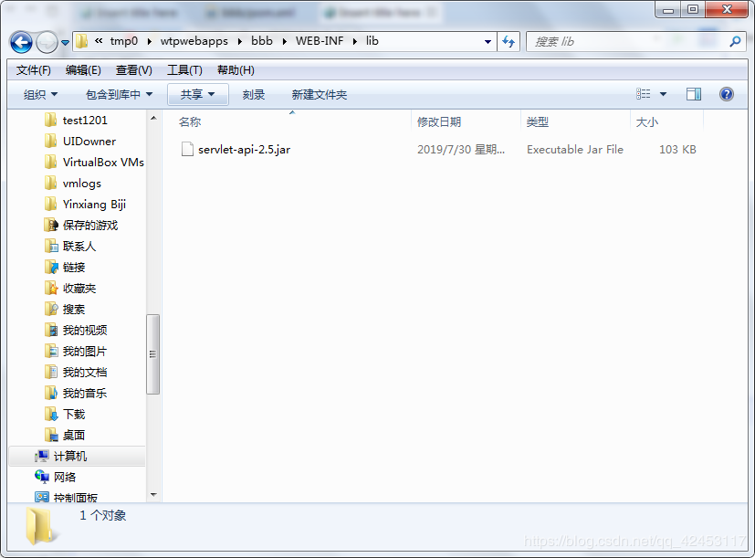

目录
@
如今我们构建一个项目需要用到很多第三方的类库，一个项目jar包的数量之多往往让我们无法想象，并且jar包之间的关系错综复杂，一个jar包往往又会引用其他jar包，缺少任何一个jar包都会导致项目编译失败。
以往开发项目时，人们往往需要花较多的精力在引用Jar包搭建项目环境上，而这一项工作尤为艰难，因为jar包之间的关系很复杂，当某些jar包无用后，又很难将其从中去除。
而Maven就是一款帮助程我们构建项目的工具，我们只需要告诉Maven需要哪些jar 包，它会帮助我们下载所有的jar，极大提升开发效率。
那么既然你看到了这篇文章，我暂且就认为你对Maven有一定的了解并且已经完成了Maven的下载安装和环境变量的配置。关于Maven的安装配置网上教程有很多，我就不做重复的事情了，我们直接进入正题。来看看关于Maven的核心概念：
那么，我么就从这八个方面来深入学习一下Maven。
对于目录结构，Maven有着自己的规定，所以我们只需要了解Maven自动构建生成的目录结构及其作用。
POM(Project Object Model)，项目对象模型。
在Maven构建的项目中，pom.xml是核心配置文件，与构建过程相关的一切设置都在这个文件中进行配置。重要程序相当于web.xml对于Web工程。
我们类比数学中的坐标：
在平面上，使用X、Y两个向量可以唯一地定位平面上的任何一个点；
在空间中，使用X、Y、Z三个向量可以唯一地定位空间中的任何一个点。
那么在Maven中，使用下面三个向量可以唯一地定位仓库中的任何一个点。
这是一个逐渐缩小范围的定位，在现实生活中，你要邮寄一个快递，你得先写省份，然后写市区，然后写县乡，最后是具体哪栋楼或某个位置。我们看一个例子：
在仓库中有这样一个jar包，我们如何来定位它呢？我们看到该文件夹下有一个pom文件，我们打开看一看：(截取了部分)
我们只看关键部分，那么在Maven中，工程的坐标与仓库中的路径其实是一样的，所以我们可以通过这三个向量组拼出一个路径：
commons-logging/commons-logging-api/1.1/commons-logging-api-1.1.jarjar文件的命名规则是atrifactId - 版本号。而我们查看仓库目录，发现jar文件所处的文件路径确实如此，这就是Maven管理jar包的一个统一方式。
Maven解析依赖信息时，会到本地仓库中查找被依赖的jar包。
对于我们自己开发的Maven工程，使用install命令安装后就可以进入仓库。
依赖中比较重要的一个概念是依赖范围，依赖范围可分为三类：
在主程序中是无法看到测试程序的，但是在测试程序中能够看到主程序，所以compile范围对主程序和测试程序都有效，并且参与打包；而test范围对主程序无效，对测试程序有效，不参与打包；provided范围对主程序和测试程序都有效，但不参与打包。
这里简单提一提关于依赖的传递性：在工程中可以通过其它工程进行一个依赖的传递，可以传递的依赖不必在每个模块工程中都重复声明，在最底部的工程中依赖一次即可。
但是依赖中的传递也不是绝对的，例如非compile的依赖无法传递。
相反地，依赖具有排除性。当你不想要某些jar包时，就需要设置依赖的排除方式：
<exclusions>
<exclusion>
<groupId></groupId>
<artifactId></artifactId>
</exclusion>
</exclusions>这样即可将jar包排除，但它只能在当前工程生效。
依赖原则：
在Maven中，仓库可分为两类：
而仓库中保存的内容就是Maven工程，可分为三类：
Maven中的生命周期，其实就是各个构建环节的顺序。
构建环节：
这个构建顺序不能够被打乱，必须顺序执行。
Maven的核心程序中定义了抽象的声明周期，生命周期中各个阶段的具体任务是由插件来完成的。
Maven有三套相互独立的生命周期，分别是：
它们是相互独立的，你可以仅仅调用clean来清理工作目录，仅仅调用site来生成站点，当然你也可以直接运行mvn clean install site运行所有这三套生命周期。关于每套生命周期的具体内容不做分析。
而Maven核心程序为了更好地实现自动化构建，按照这一特点执行生命周期的各个阶段：不论现在要执行生命周期中的哪一阶段，都是从这个生命周期最初的位置开始执行。
假设一个情景：
Hello项目依赖的JUnit版本：4.0
Hello2项目依赖的JUnit版本：4.0
Hello3项目依赖的JUnit版本：4.9
由于test范围的依赖不能传递，所以必然会分散在各个模块中，很容易产生版本不一致的问题。
那么我们就可以将JUnit依赖版本统一提取到父工程，在子工程中声明依赖时不指定版本即可，那么子工程将会以父工程中统一设定的版本为准，同时也便于修改。注意如果一个工程作为父工程，打包方式应为pom。在子工程中使用parent标签来声明父类的引用。
作用：一键安装各个模块工程
配置方式：在一个总的聚合工程中配置各个参与聚合的模块。
通过models标签进行配置。然后只需在聚合工程上执行安装命令即可一键安装所有模块工程。
前面说了这么多关于Maven的理论知识，不光自己说得口干舌燥，看的人肯定也已经晕头转向了。但是没办法， 基础知识我们得掌握，然后才能在实际运用中更加得心应手。那么接下来我们就实际操作一下Maven工程，这里以eclipse为例。首先是Maven插件的设置：只要不是版本特别老的eclipse，它都已经内置了Maven插件，我们只需要设置一下即可。
点击Windows，然后选择Preferences打开首选项窗口。
我们点击Installations设置一下Maven的路径，eclipse会内置一个Maven，但通常认为内置的Maven不够好，不够稳定，所以我们点击Add，然后找到我们自己下载的Maven，添加进去即可。然后User Setting用于指定Maven仓库的位置，eclipse默认会自己找到。
设置完毕后，我们在eclipse中创建一个Maven版的Java工程：
右键->New->Other->找到Maven Project->Next
该Java工程默认会有一个JDK版本，如果想直接修改默认JDK版本，可以来到Maven安装目录下的conf目录，打开settings.xml文件，找到profiles标签，然后在里面添加：
<profile>
<id>jdk-1.7</id>
<activation>
<activeByDefalut>true</activeByDefalut>
<jdk>1.7</jdk>
</activation>
<properties>
<maven.compiler.source>1.7</maven.compiler.source>
<maven.compiler.target>1.7</maven.compiler.target>
<maven.compiler.compilerVersion>1.7</maven.compiler.compilerVersion>
</properties>
<profile>那么接下来演示一下如何创建Web工程：
具体创建的是什么工程，其实是由Packaging决定，如果选的是jar，则创建Java工程；如果选的是war，则创建Web工程。
那么可以看到的是，Maven构建的Web工程并没有web.xml文件，导致工程报错，webapp下也没有任何东西，显然这个Web工程是不完整的，我们来解决这一问题。
右键点击工程，然后选择Properties，打开配置窗口：
点击Projecy Facets，会发新Dynamic Web Module默认是选中的，我们把勾去掉，接着点击Apply，然后又把勾打上，这时你会发现下面多出了一个选项，我们点击打开窗口：
按照上面的进行修改，然后点击OK。现在项目就不报错了。
然而当你在webapp目录下新建了一个jsp文件后，项目又报错了。
这是因为项目中缺少Apache Tomcat的运行环境，那怎么解决呢？
打开pom.xml，我们知道，HttpServlet在servlet-api的jar包下，那么我们就可以通过pom文件进行该jar包的导入，在pom.xml文件中添加下面的依赖：
<dependencies>
<dependency>
<groupId>javax.servlet</groupId>
<artifactId>servlet-api</artifactId>
<version>2.5</version>
<scope>provided</scope>
</dependency>
</dependencies>点击保存后项目立马就不报错了。然后我们运行一下程序，程序正确运行，接着来到部署目录下，发现lib目录是空的。
这是因为依赖的范围是provided，如果我们将依赖范围设置为compile，再运行看效果。

这时候jar包就被下载到了lib目录。这也解释了上面说的依赖范围关系。
现在我们来到index.jsp文件编写一条EL表达式：
会发现pageContext后面没有提示而request有，这是因为request是serlvet-api包下的，而这个jar包我们在刚才已经导入了，所以，我们只需要导入pageContext所在的jar包即可，在pom文件下添加一条依赖：
<dependency>
<groupId>javax.servlet.jsp</groupId>
<artifactId>jsp-api</artifactId>
<version>2.1.3-b06</version>
<scope>provided</scope>
</dependency>现在pageContext的提示就出来了。
关于依赖的范围问题要尤为重视，如果你将jsp-api的范围设置为compile，项目运行后会产生一个空指针异常，显然这个异常不是我们的代码产生的，因为我们压根就没写什么代码。如果依赖范围设置为了compile，我们知道jar包是会被下载到lib目录下的，而jsp-api需要依赖两个jar包，这样总共就下载了三个jar包，而这些jar包在Tomcat中也存在。此时这些jar包就会产生冲突，从而造成一些无法理解的错误。所以依赖范围一定要严谨。
假如我们在做一个项目，一开始使用的是spring4.0的版本，但是后面我们需要对jar包进行升级，将版本升级为5.0，该如何升级呢？我们知道，spring框架所依赖的jar包非常多，一个一个地在pom文件中进行修改显然不合理。那么在pom中，我们有一个很好的配置方式：
[1]使用properties标签内部使用自定义标签统一声明版本号
[2]在需要统一版本的位置，使用${自定义标签名}引用声明的版本号
注意：执行与构建过程相关的Maven命令，必须进入pom.xml文件所在的目录。
常用命令：
然而关于这些jar包的依赖信息我们不可能能够熟记，而事实上我们也不需要去记，只是在需要的时候上网搜索一下即可。贴上一个查询依赖信息的网站：https://mvnrepository.com/ 需要什么jar包的依赖信息，只需在搜索框输入然后搜索即可。